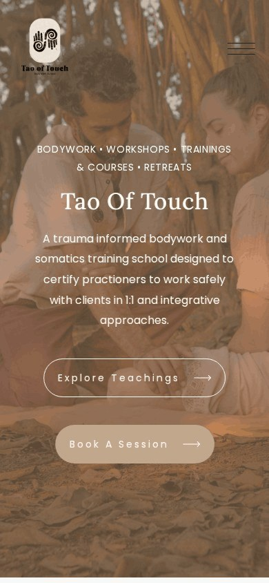

CS/05 · Bodywork Education · International
330+ students trained, ISO-backed certification, festival-circuit credibility — all of it invisible until now.


The brief
The school’s credibility lived in word of mouth and an Instagram bio. We gave it a home: five trainings as structured pages, video testimonials, an FAQ that pre-handles what “trauma aware” means — then pointed paid campaigns at course pages, not a homepage. Phase 2, course e-commerce, is scoped and next.
By the numbers
We build the funnel. You take the cake.